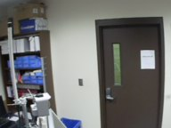

Snapshots

 The NDmesh network is a wireless testbed system consisting of several router boxes scattered across the rooftops of Notre Dame's campus. The boxes include Libelium's meshLium router hardware connected to a GPS receiver, wireless antennae for 802.11a and 802.11b/g, and an ethernet connection to a Panasonic surveillance camera; the entire setup is powered by a solar panel and battery combination. Routers connect to each other with the long-range 802.11a radios while using 802.11b/g to provide connectivity to mobile devices, such as laptops and Wifi-enabled mobile phones. These rooftop devices, known as Non-Gateway Routers (NGWs), provide Internet connections by using Optimized Link State Routing Protocol to find a path to one of two Gateway Routers (GWs), which lack cameras but instead connect to the main campus networks and the outside world.
The NDmesh network is a wireless testbed system consisting of several router boxes scattered across the rooftops of Notre Dame's campus. The boxes include Libelium's meshLium router hardware connected to a GPS receiver, wireless antennae for 802.11a and 802.11b/g, and an ethernet connection to a Panasonic surveillance camera; the entire setup is powered by a solar panel and battery combination. Routers connect to each other with the long-range 802.11a radios while using 802.11b/g to provide connectivity to mobile devices, such as laptops and Wifi-enabled mobile phones. These rooftop devices, known as Non-Gateway Routers (NGWs), provide Internet connections by using Optimized Link State Routing Protocol to find a path to one of two Gateway Routers (GWs), which lack cameras but instead connect to the main campus networks and the outside world.
The purpose of this project is to tap into the cameras on the NGW routers, allowing users to look at snapshots or video feeds and to adjust the viewing angle with a simple and easy-to-use web interface. The figure below provides an overview of the network architecture:

snoopy.cse.nd.edu - Here resides an Apache Web Server and a MySQL database, along with several Perl scripts for managing them and for interfacing with the NDmesh network.
Gateway Router - There are currently two of these one the NDmesh network; running on them are a multithreaded C server, capable of accepting multiple simultaneous connections from Snoopy and establishing for each of them a link to a NGW Router.
Non-Gateway Router - Twelve of these are present on the network at this time; a similar multithreaded C server accepts connections from the GWs, establishes links to the cameras, and forwards commands and responses between them.
Camera - These Panasonic commercial cameras have a closed-source web server installed, with which the NGW server can interact.


Use the menu at top left to explore this site, or follow the links below for code and the development wiki.
Credit for this site's design and functionality:
Chris Holguin
Greg Angle